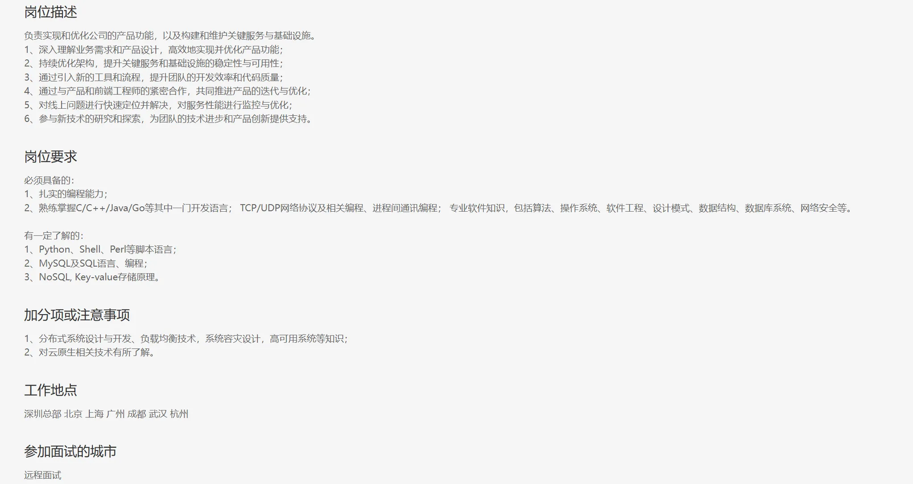
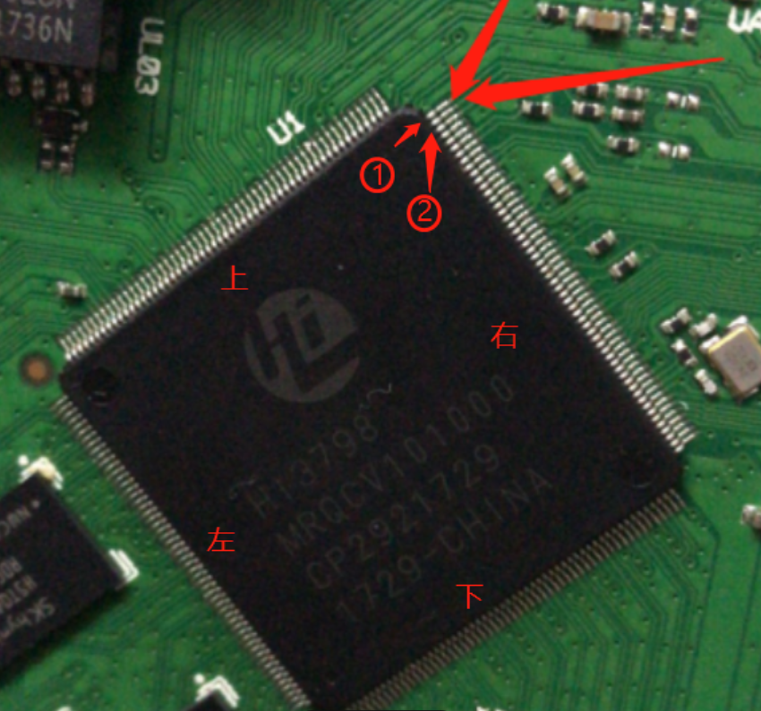

大三了，虽然我的意向是准备保研，但突然发现学校最近疯狂推送有关于实习的消息，这令我很开心，因为以前学校从未推送过任何我熟知大厂来招聘的消息，这不禁让我对学校的实力产生了一些质疑（笑）。同时我从来没尝试过投递实习，因为我一直觉得我很菜:(，利用这次机会来看一看大厂的面试过程。
背景
笔者当时准备补考，简历也是投着玩，当时笔者并不知道进入wxg部门的难度以及最起码的投递简历的原则（笔者只投了腾讯一家，且打算避开今年暑期推免时间，于是将预期入职时间选择在2026年1月。

2-27.19:30
经历
19.20接入会议，面试官提前约五分钟进入，上来便甩出五到算法题，其中最后一题要求写思路，剩下四道写具体代码，在腾讯自家的 面呗 网站中嵌入了一个 vscode 。面试官没打开摄像头，直接打字 :
先做一下这五道题，我约的是20:30的会议室，到时候我们再语音聊。
感觉最起码互相应该开开摄像头？？ 这不跟正常上机考试一样了。
于是开始慢慢做题。期间聊天框打断我要求不要用python写，用c++来写。
最大异或对
在给定N个整数中，选择两个进行异或运算，输出最大结果。正常暴力是 $O(n^2)$可以用用tire树来做。O(n)即可。
#include <iostream>
#include <vector>
using namespace std;
struct Trie {
Trie* next[2]; // means 0 or 1
Trie() {
next[0] = nullptr;
next[1] = nullptr;
}
};
class Solution {
private:
Trie* root;
public:
Solution() {
root = new Trie();
}
~Solution() {
deleteTrie(root);
}
void deleteTrie(Trie* node) {
if (!node) return;
deleteTrie(node->next[0]);
deleteTrie(node->next[1]);
delete node;
}
void insert(int x) {
Trie* p = root;
for (int i = 31; i >= 0; i--) {
int v = (x >> i) & 1;
if (!p->next[v]) {
p->next[v] = new Trie();
}
p = p->next[v];
}
}
int query(int x) {
int res = 0;
Trie* p = root;
for (int i = 31; i >= 0; i--) {
int u = (x >> i) & 1;
if (p->next[1 - u]) { // 选择异或更大的方向
res |= (1 << i);
p = p->next[1 - u];
} else {
p = p->next[u];
}
}
return res;
}
int findMaximumXOR(vector<int>& nums) {
for (int num : nums) {
insert(num);
}
int res = 0;
for (int num : nums) {
res = max(res, query(num));
}
return res;
}
};
int main() {
vector<int> nums = {3, 10, 5, 25, 2, 8};
// 这里我放了一些英文
Solution solution;
cout << solution.findMaximumXOR(nums) << endl;
return 0;
}
荷兰国旗问题
将一个包含三种颜色的元素（通常用0、1、2表示）的数组，就地排序成0、1、2三个区域，类似荷兰国旗的红白蓝三色排列 输出 [000111222]这种
思路也很简单，维持 l mid r 三个指针，mid从0→n 遇到0 和 l处交换 遇到2 和r处交换 当mid到达r的时候 表示1右边全是2。O(n)复杂度
#include <iostream>
#include <vector>
using namespace std;
void sortColors(vector<int>& nums) {
int low = 0, mid = 0, high = nums.size() - 1;
while (mid <= high) {
if (nums[mid] == 0) {
swap(nums[low], nums[mid]);
low++;
mid++;
} else if (nums[mid] == 1) {
mid++;
} else { // nums[mid] == 2
swap(nums[mid], nums[high]);
high--;
}
}
}
int main() {
vector<int> nums = {2, 0, 2, 1, 1, 0};
sortColors(nums);
for (int num : nums) {
cout << num << " ";
}
cout << endl;
return 0;
}
真随机洗牌算法
要求用C++实现，假定C++库中的random是真随机。
实现的方法也很简单。
#include <iostream>
#include <cstdlib>
#include <ctime>
void ShuffleArray(char* arr, int len) {
std::srand(static_cast<unsigned int>(std::time(0)));
for (int i = len - 1; i > 0; --i) {
int j = std::rand() % (i + 1);
std::swap(arr[i], arr[j]);
}
一个超大量数据请求的输出最多前十10请求的IP的思路题
滑动窗口1h，并发请求10w条/s，单核机子，无分布式存储（限定了服务器内存很有吸纳
只要求写思路，维护一个大根堆，一个队列存ip和对应时间戳，一个hashmap来存IP请求数。
后续
HIT校园网很抽象，疯狂掉线，导致vscode疯狂重新加载界面，我的第一题的代码都快写完了，结果全没了。。。。大约20:20我就写完了，进入发呆状态。大约在我写第二道题的时候，面试官于聊天框中要求我打开摄像头，我才发现设备根本就没连接上，重新刷新界面终于找到摄像头设备，面试官可以远程打开我的摄像头，并在我做第四道题的时候瞧瞧的打开了我的mic。
正式交流时他的摄像头依然关闭，让我以此讲解这四道题的代码。
第一题讲解后问我为什么 i 要取 31
答曰题目要求是int类型，4Byte共32位。
然后又问我写第一问用多长时间
答曰10分钟，并说网络环境可能有些问题，代码保存有点Bug（）耽搁了很久
第三题讲解时拷打我为什么从大往小遍历，这题因为在ctf中见过，因此直接这么写的。简单思考后回答，如果从小往大遍历，则当i = 0 时 随机数是mod 1 也就是j一定是 0 或者 1 也就是要么不交换 要么只和1交换。
可能我的表达稍微模糊些，他没有get到（其实我也没get到他就是让我证明真随机性）答曰 当从后往前遍历是，几率恒 $\frac{1}{n}$ 。放我过了。
第四题当我说完后，提问如果存储存不下如何，其实最初并没有get到面试官的问题，下来后复盘分析了一下:
- 存储这个hashmap要 $O(n)$
- 存储这个queue要 $O(n)$
- 存储这个堆 $O(10)$
我暗示其给点提示，回复让我多想想，思考大约一个半分钟，对面只是静静地等着，答曰可以将queue完全丢掉，转而维护60个bukket，一个bukket一分钟，按照分钟进行统计ip，就可以将空间复杂度降到常数，至于hashmap等，我直接答上redis。如果我没听错，对面应该不止面试官笑了，我意识到可能不止一个人在听（不过可能我感觉错了。。。。）
然后又给我发了一个智力题目:
25匹马赛跑，5个跑道，每个赛道一匹马每轮最多5匹马同时跑。请问，最少需要跑几轮才能决出前3名？
申请拿草纸算，算了大约3分钟，回答是7。 期间想复杂了，后来想起来这个其实就是个五路归并。
思维题：25匹马，5个赛道，求选出速度最快的3匹马最少需要多少次比赛？-CSDN博客
自然是让我进行讲解，讲解大约五分钟，面试官问我后面两轮怎么做，说的很含糊（其实当时我想的也不是太好，说着说着发现自己想错了）然后只好在给他讲的过程中重新捋顺思路。打开网站里的白板画给他，最后他不知道是听明白了还是不想听我讲，反正是结束了。
并问我有什么想问的没，感觉对面很是疲劳（后面我才知道wxg是腾讯加班最严重，强度最大的一个部门，号称腾讯里面的pdd）。反问实习时间是否可以变动，回答很笼统。
整体感觉并不是很尊重人，像是进行了一次leetcode中等难度题目的上机训练。。并没有问任何有关开发相关的基础知识和网络协议等，与上面招聘要求完全不符。
我去面试，代表hit，我想如果腾讯面我，面试官应该也许代表的也是我对腾讯的第一印象。但不管如何，第一次面试就在这么我认为理想与现实巨大落差，甚至是有点荒唐中结束了。（都不如再吃一块披萨）
感觉相同 没过
由于也不是很着急找实习，因此后续也没有继续投递简历。

后期复盘
- 当真正需要找工作时，投递简历应该是一个多对多的过程，不能耗在一家上。
- 可能是前期hr已经找到了合适的人选，导致现在刷kpi。